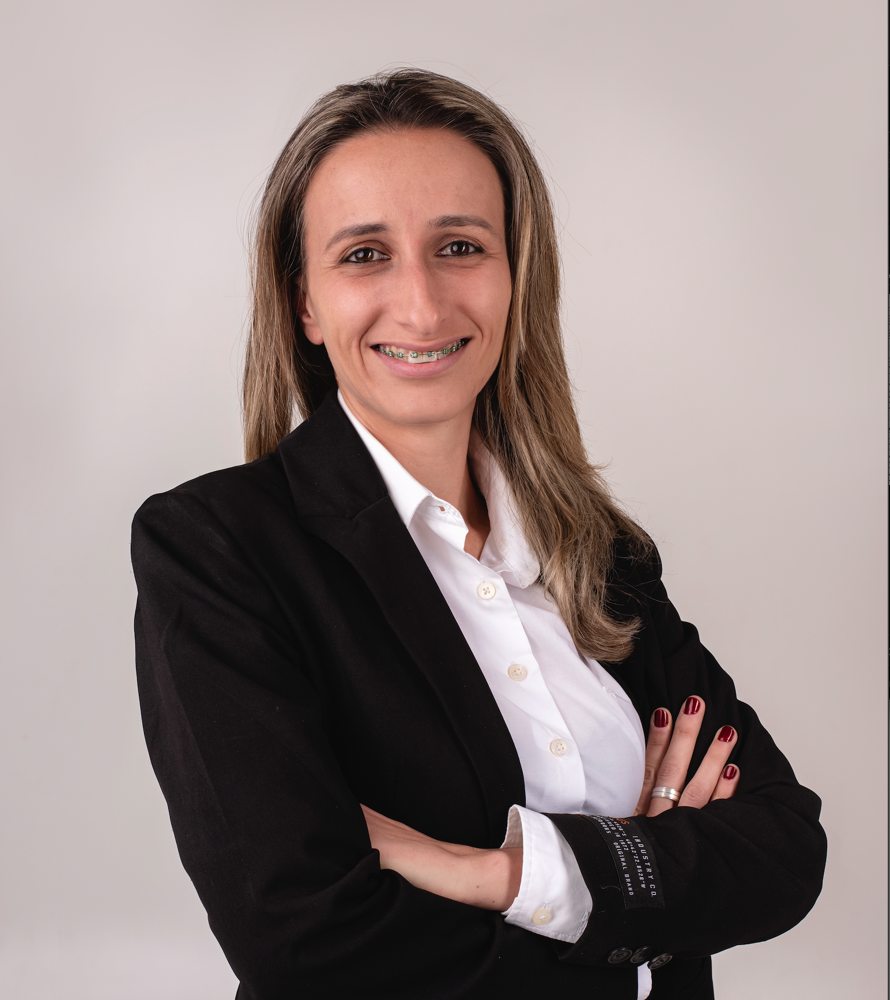

Planejamento Estratégico | Negócios Digitais
Telefone: (54) 99637.5243
Email: greice@sunupadv.com
LinkedIn: linkedin.com/in/greice-dalmoro
Eu sou Greice Keli Dalmoro, uma profissional com formação em Administração de Empresas, Pós-Graduação em Gestão de Projetos. Atualmente, amplio meus horizontes cursando Medicina Veterinária, Ciências da Computação e também estou finalizando o curso de Ciências Contábeis, que no momento está pausado devido a necessidade de priorizar as duas primeiras.
Como empreendedora, lidero dois negócios: sou co-proprietária da SUN UP Creative High Performance Agency, onde desenvolvemos estratégias digitais inovadoras para potencializar o desempenho de empresas no universo online, transformando presença digital em resultados concretos de vendas. Paralelamente, sou proprietária da Clínica Safe Animal, uma referência em cuidados veterinários em Guaporé, garantindo o bem-estar animal com excelência técnica e atendimento humanizado. Minha abordagem profissional é fortemente orientada por dados, utilizando-os como bússola para navegar pelo desconhecido, capturar insights valiosos e estruturar organizações com foco em rentabilidade e solidez. Busco conectar-me com pessoas que, assim como eu, respeitam tradições enquanto reconhecem as transformações do mundo contemporâneo, entendendo que a colaboração intelectual e a liberdade de pensamento coletivo são fundamentais para um planejamento estratégico preciso e eficaz. A combinação entre meus conhecimentos em gestão empresarial, medicina veterinária e tecnologia me permitirá desenvolver uma perspectiva integrativa no futuro, buscando soluções que equilibrem práticas consolidadas com inovações apropriadas para o crescimento sustentável. Esta formação multidisciplinar contribuirá para a criação de abordagens eficientes que respondam às necessidades emergentes, tanto no campo da medicina veterinária quanto na gestão empresarial com suporte tecnológico.Planejamento Estratégico e Sócia Fundadora
Junho 2019 - PresenteTempo de Experiência:
Planejamento Estratégico e Proprietária
Janeiro 2025 - PresenteTempo de Experiência:
Analista de Programação
Ago 2008 - Jun 2019Tempo de Experiência:
Atitus Educação
Formação concluída em 2029Atitus Educação
Formação concluída em 2027UCS - Universidade de Caxias do Sul
Previsão de Formação em 2026CUOA Business School na Itália
Formação concluída em 2023UCS - Universidade de Caxias do Sul
Formação concluída em 2022UCS - Universidade de Caxias do Sul
Formação concluída em 2017Aulas Particulares
Em AndamentoCES Schools • Edinburgh, Escotland
Ano 2024Stafford House • Calgary, Canadá
Ano 2018